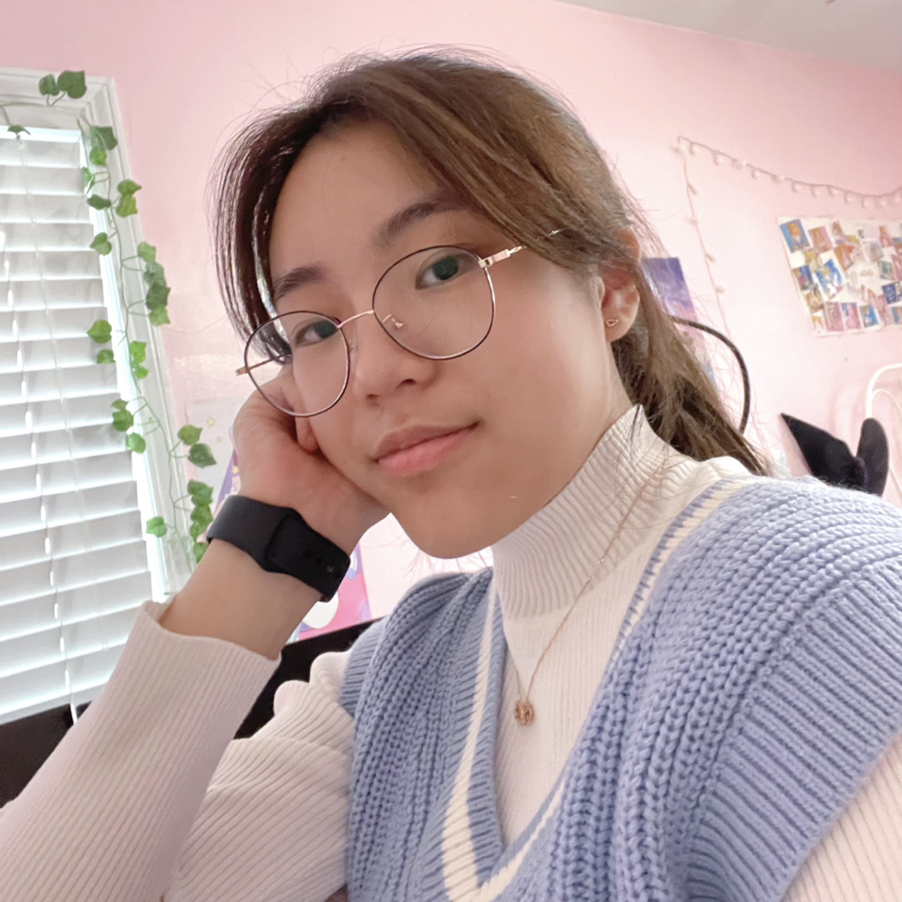

 My name is Casey Ye, a current student with a strong passion for keyboards and PC building! I started this hobby during 2019, when COVID started and everyone was in lockdown. I had broken my laptop and built my very first desktop computer. It was a good investment, especially considering the amount of time I would be spending in front of the computer. Not only did this experience introduce me to custom keyboard building, but it allowed me to better communicate with other people and find like-minded people.
 After taking many computer programming courses in high school, I realized my initial career plan of becoming a software engineer (inspired
by a family member) wasn't cut out for me. I lacked the confidence in my code and felt like I depended on too many people to produce code
that I would be proud to call my own. Building keyboards and computers and working with the actual hardware components gave me the confidence
I was looking for when exploring career paths. This hobby is what lead me to believe that I would be a good electrical engineer.
After taking many computer programming courses in high school, I realized my initial career plan of becoming a software engineer (inspired
by a family member) wasn't cut out for me. I lacked the confidence in my code and felt like I depended on too many people to produce code
that I would be proud to call my own. Building keyboards and computers and working with the actual hardware components gave me the confidence
I was looking for when exploring career paths. This hobby is what lead me to believe that I would be a good electrical engineer.
I've always had a passion fo helping and educating other people. I hope that with this website, I can share my keyboard and PC building journey to a wider audience and inspire other people, the same way this hobby inspired and help me find what I want to do with my future!

Ever since I had built my first computer, I had been itching to make something else. That's when I stumbled into the world of custom mechanical keyboards. I invested hours in watching other people being able to build something practical and so necessary in the current day and age. That's when I modded my first keyboard. The feeling of transforming the original typing experience of the keyboard felt very rewarding. I had finally found something that I was truly passionate about.
I've been comissioned to build many keyboards for people and it's something I love doing! I have made full builds for people, done the mundane
task of lubing switches, modding stabilizers, helping people create their perfect keyboard build, and programmed their keyboards using VIA. Through
this process of making keyboards, I taught myself how to solder switch joints, a basic engineering skill. As part of my mission to teach people about
keyboards, I plan to make a guide on building keyboards!
My first fully custom keyboard
Case: Tofu84 (Black)
Switches: Gateron Yellow (lubed)
Plate: Aluminum

My second fully custom keyboard
Case: Tofu65 (Acrylic)
Switches: Novelkey Creams (lubed)
Plate: Polycarbonate

My third fully custom keyboard
Case: D84 (White with acrylic bottom)
Switches: KTT Peach (lubed)
Plate: Polycarbonate

My fourth fully custom keyboard
Case: KBD Adam (White)
Switches: S^2 switches (stock)
Plate: POM
In 2019, I built my first computer. My dad helped me find the parts and I put the computer together while following a YouTube video. Recently (2023), I decided to upgrade my PC. I chose my own parts and put it together without any help. Here is how my setup evolved over the years.
February 22, 2021
June 12, 2021

September 12, 2021

July 19, 2023

 My recent build includes a Ryzen 7 7700x CPU and the GTX 3060 with 32GB of RAM in the Lian Li O11 Dynamic
EVO case. My aunt gifted me the strimers, which I encountered a lot of trouble installing because I was missing USB ports. My AIO cooler
is also the Lian Li Galahad 360mm CPU cooler. The case fans are the Lian Li SL120 fans, which were very easy to install since
you could connect multiple fans together, eliminating the need for a huge wad of cables! I installed a mini USB monitor (the WOWNOVA 5in
Computer Temp Monitor) in my PC case for aesthetics. The nice thing about this monitor is that it doesn't use up any ports on your video card.
My recent build includes a Ryzen 7 7700x CPU and the GTX 3060 with 32GB of RAM in the Lian Li O11 Dynamic
EVO case. My aunt gifted me the strimers, which I encountered a lot of trouble installing because I was missing USB ports. My AIO cooler
is also the Lian Li Galahad 360mm CPU cooler. The case fans are the Lian Li SL120 fans, which were very easy to install since
you could connect multiple fans together, eliminating the need for a huge wad of cables! I installed a mini USB monitor (the WOWNOVA 5in
Computer Temp Monitor) in my PC case for aesthetics. The nice thing about this monitor is that it doesn't use up any ports on your video card.